- shita - yuyo
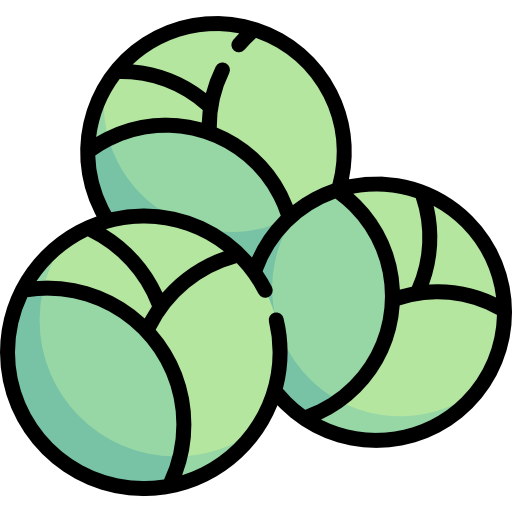
ripuyllu - col- haćha kulish - col nativa
- uchu - rocoto
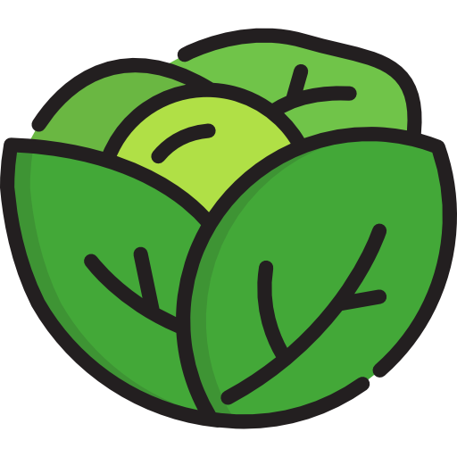
lichuka - lechuga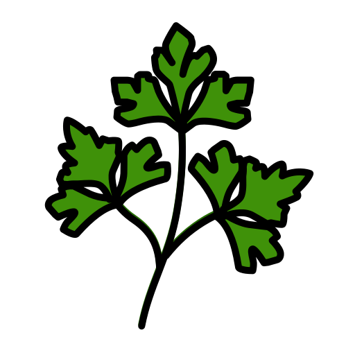
kulanćhu - culantro- pirihil - perejil
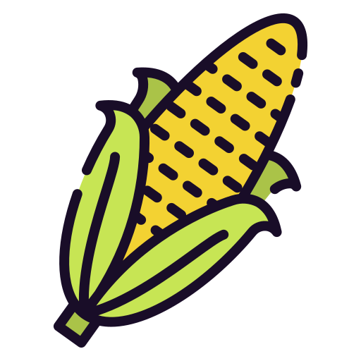
hala - maíz- chuullu - choclo
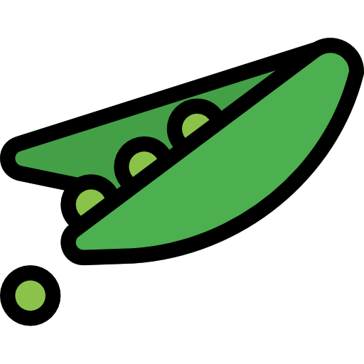
alwish - arveja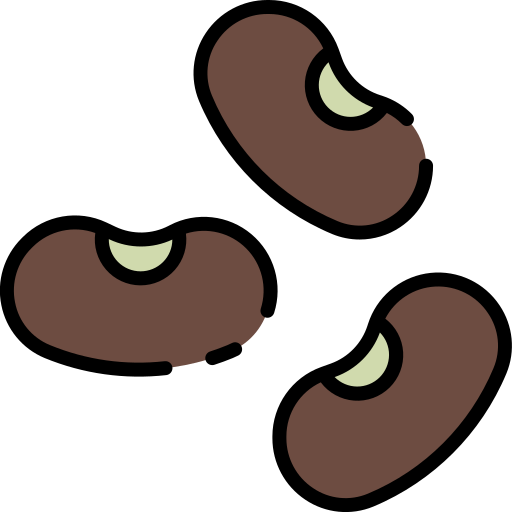
yunya - frejol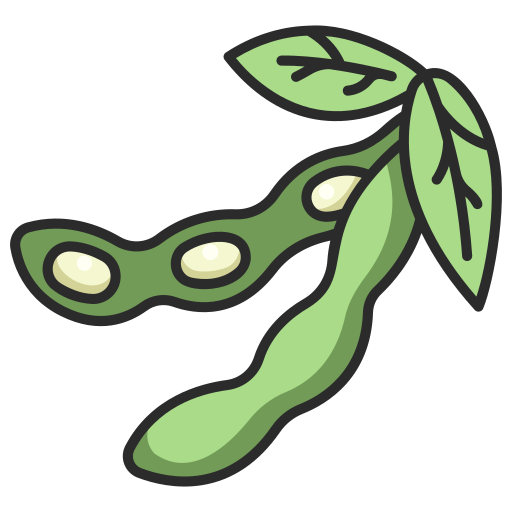
aawaśh - habas- talwi - chocho
- kinwa - quinua
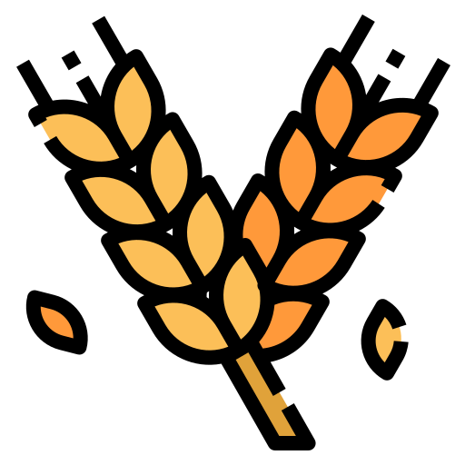
siwara - cebada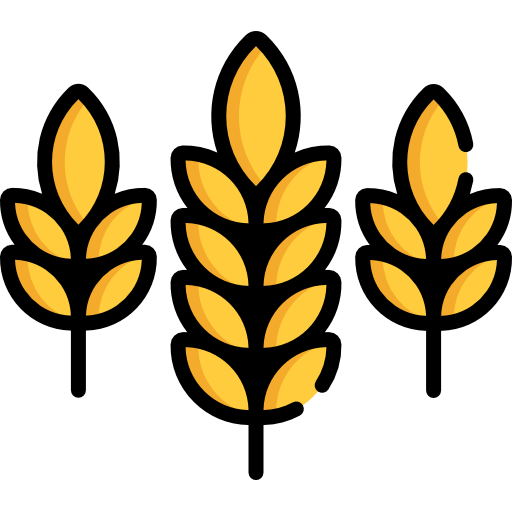
riigu - trigo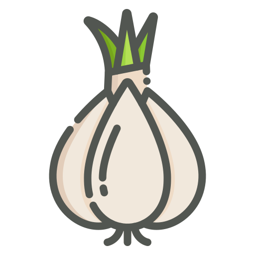
ahus - ajos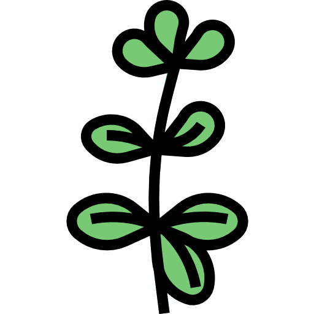
uryaanu - orégano- kulaw - papa nativa
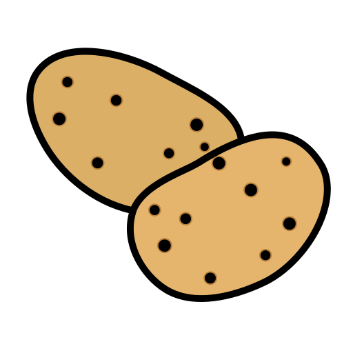
akśhu - papa- llullu akśhu - papa nueva
- yulaa aśhu - papa blanca
- luntuśh akśhu - papa amarilla
- kallwa akśhu - papa alargada
- maćhka akśhu - papa arenosa
- shili akśhu - papa de chuño
- mishki akśhu - camote
- shakapa - yacón
- yuka - yuca
- maka - maca
- uwa - oca
- maśhwa - mashua
- ulluku - olluco
- rakacha, laaćhu - arracacha
- sanurya - zanahoria
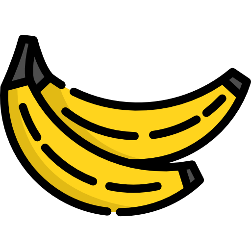
ruuta - plátano- pulupulu - granadilla
- paqay - pacay
- lukma - lúcuma
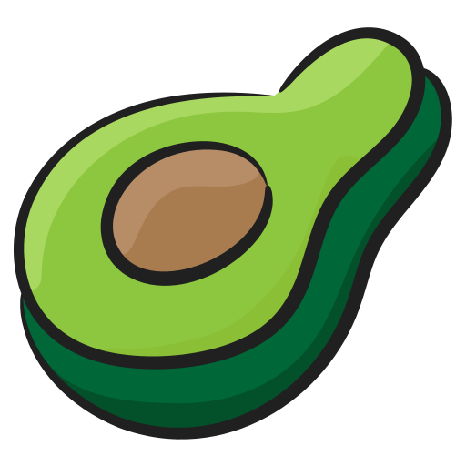
palta - palta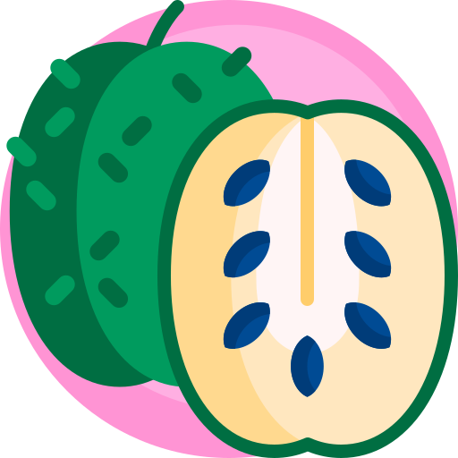
chirimuy - chirimoya- tuunaśh - tuna
- tumwu - granadilla silvestre
- kapuli - aguaymanto
- shankay - cactus
- maatu - variedad de guayaba
- śhawintu - guayaba
- alakanćha - silata
 aycha - carne
aycha - carne- waaka aycha - carne de res
- kuchi aycha - carne de cerdo
- uwish aycha - carne de carnero
- akaśh aycha - carne de cuy
- wallpa aycha - carne de gallina
- kuchipa uman - cabeza de chancho
- uwishpa uman - cabeza de carnero
- uwishpa śhunqun - corazón de carnero
- kuchipa yawarnin - sanger de chancho
- wila - grasa
- chalwa aycha - carne de trucha
- uman caldo - caldo de cabeza
- yaku ćhupi - sopa verde
- patachi - sopa de trigo
- ulluku ćhupi - sopa de olluco
- siplaśha hala - maíz pelado
- tamal - tamal
- muti - mote
- akśhu ankay - papa frita
- wayta - pachamanca
- challwa kanka - trucha frita
- wallpa kaldu - caldo de gallina
- akaśh kanka - cuy chaktado
- allí aśhnakaćha - oloroso, fragancioso
- puchuśha, unćhiśha - avinagrado
- amya - insípido
- kaćhiisha, kaćhisapa - salado
- puchuu - ácido, agrio
- ćhakćhaa - amargo
- asyaa - maloliente
- ayaa, uchusapa - picante
- aśhnaa - apestoso
- mishki - dulce
- miskisapa - muy dulce
Mikuq liśhun - ¡vamos a comer!, "li" viene del verbo likay=ir
Puñuyq liśhun - ¡vamos a dormir!
Awsaq liśhun - ¡vamos a jugar!
Likaq liy - ¡ve a mirar!
Awsaq liy - ¡ve a jugar!
Awsaq lipaakuśhun - ¡que vayan a jugar!
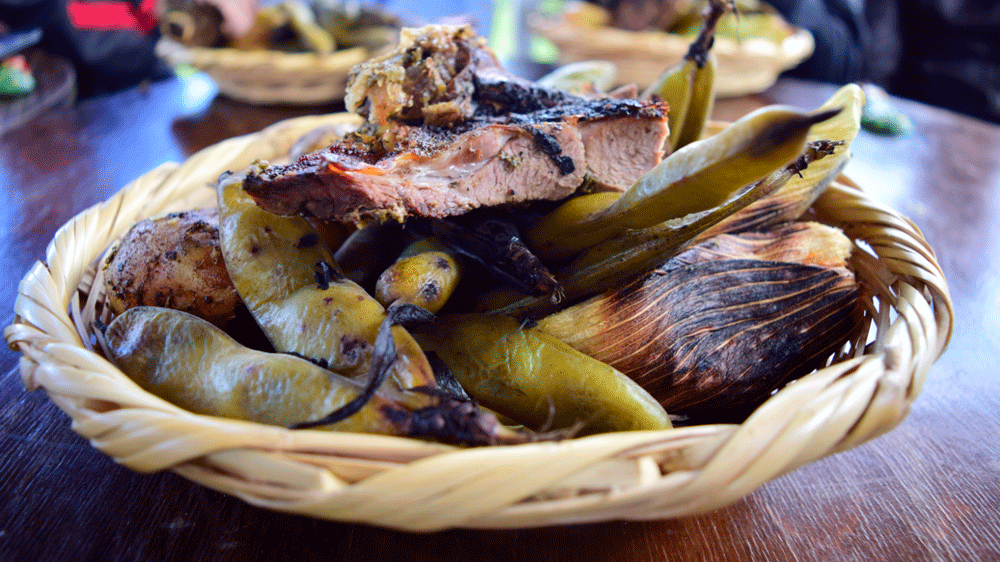
¿Imam śhutin? - ¿Cuál es su nombre?
Watyam śhutin watya - pachamaca, watyay = hornear
¿Imakunayuqmi? - ¿Qué cosas posee, cuales son sus ingredientes generales?
Apichuyuqmi, - tiene, posee habas
Aychayuqmi,
Aawaśhniyuqmi,
Akśhuyuqmi,
Laśhtiyuqmi. - con humitas
¿Imawanmi lulanchik? -¿Con qué preparamos?
Yantawan,- con leña
Lumiwan,
Ninawan,- con fuego
Apichuwanmi,
Aychawanmi,
Aawaśhwanmi,
Akśhuwanmi,
Chuqlluwanmi lulanchik
¿Mayćhuumi mikunchik? - ¿En dónde comen?
Lluy malkakunaćhuumi mikunchik - Comemos en todos los pueblos, lluy=todos
Chupakaćhuumi mikunchik - Comemos en Chupaca
¿Imanuypam lulanchik - ¿De que manera se prepara?
Pampaćhu ućhkunchik - Cabamos en la pampa, ućhkuy=cabar, nchik=nuestro/a, ćhu=en
Yantakta pilqanchik - apilamos la leña, pilqay=apilar, kta / ta=a, al, a la, la, el
Lumikta hananman ćhulanchik - colocamos encima la piedra, ćhulay=guardar
Ninakta walachinchik - encendemos la leña, Walachiy=encender
Qunuqluptin - cuando haya calentado, qunuy=calentar, pti=cuando (respuesta)
Lumikuna ćhawpinman mikuykunakta - colocamos las piedras, ćhulanchik=
Allpawan pampanchik - enterramos con tierra, pampay=enterrar
Ćhaśhananta alkanchik - esperamos que cocine, alkay=esperar
Lluyta hulqunchik - sacamos todos, sacar, hulquy=retirar
Matikunaćhu qalanchik - en mate servimos, qalay=servir
Ćhaśhay: esta cocido